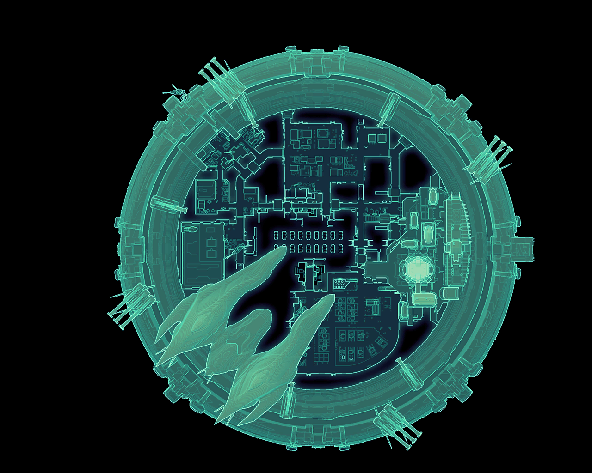
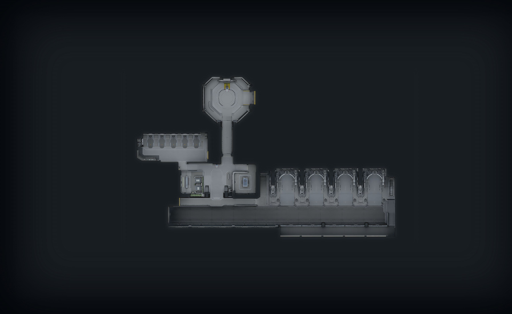

キズナトーク
キズナトーク let you catch up with your companions off duty across NLA's parks, cafés, rooftops, and hangars. Viewing all 102 scenes deepens squad Affinity for ソウルボイス, unlocks dialogue insight into each teammate's background, and checks off dozens of city survey segments needed for 100% completion.
For a companion to appear at their Heart-to-Heart spot rather than their usual hangout, remove them from your active four-person party first and set the game clock from the pause menu. Thirteen conversations also ask you to assign a  イヌ or
イヌ or  ネコ at the ブレイドホーム console after clearing
ネコ at the ブレイドホーム console after clearing  ブレイドの仕事, and
ブレイドの仕事, and  ラオ's five entries should be completed before starting Chapter 9.
ラオ's five entries should be completed before starting Chapter 9.


 エルマ0/5 (0%)
エルマ0/5 (0%)
Remove エルマ from your active party to spawn these five conversations across NLA as their Affinity climbs from 1 to 5 Hearts. Keep a Barracks pet assigned for their later animal-lover events.
- #1 スタンス · 1 Heart · 工業エリア · 12:00-17:00. Located in the afternoon in the Central Industrial District at the bottom of the stairs leading to the elevator leading to Primordia and the West Gate. Elma is shown holding a comm device while in conversation with two other workers.
- #2 ブレイク · 2 Hearts · 住宅エリア · 19:00-00:00. Located at night in the Residential District to the west of the Water Purification Plant, as long as a cat is selected as a pet in the BLADE Barracks and the previous Heart-to-Heart, The Techie, is completed. Naturally, this requires the Affinity Mission Nine Lives to be completed so that a cat can be a pet. Elma is shown on her knees stretching toward a cat in the railing of the district. Once talked to, she discusses about her love of animals and her own cat on Earth. Equip a
 ネコ pet at the Barracks. Requires Previous H2H #1: スタンス.
ネコ pet at the Barracks. Requires Previous H2H #1: スタンス. - #3 ドライブ · 3 Hearts · 商業エリア · 07:00-12:00. Located in the morning in the Commercial District on the east end of East Melville Street, as long as the previous Heart-to-Heart, Petting Zoo, is completed. Elma's up for some car talk with Cross, as she's looking at a parked sports car from behind. Requires Previous H2H #2: ブレイク.
- #4 フレンドシップ · 4 Hearts · マ・ノン宇宙船エリア · 17:00-19:00. Located in the evening on the Starboard side of the Ma-non Ship, as long as the previous Heart-to-Heart, Driving Force, is completed. Elma is in thought about xenoforms and their relationship with humans. Requires Previous H2H #3: ドライブ.
- #5 ホーム · 5 Hearts · ブレイドホーム · 19:00-00:00. Located at night at the BLADE Barracks to the left of the barracks customization terminal, as long as the previous Heart-to-Heart, Friendship Treatise, is completed. This Heart-to-Heart changes depending on whether the player has completed Chapter 12. Requires Previous H2H #4: フレンドシップ.
 リン0/5 (0%)
リン0/5 (0%)
Remove リン from your active party to spawn these five conversations across NLA as their Affinity climbs from 1 to 5 Hearts. Keep a Barracks pet assigned for their later animal-lover events.
- #1 フライトマフィン · 1 Heart · 工業エリア · 19:00-00:00. Located at night inside the eastern section of the test room of the Outfitters Test Hangar, where Lin is talking with another woman. This Heart-to-Heart also requires Chapter 3 to be completed. Requires 第3章 運命の解放者.
- #2 ドッグクレープ · 2 Hearts · 商業エリア · 12:00-17:00. Located in the afternoon on West Melville Street on the western edge of the main island of the Commercial District after the previous Heart-to-Heart, Flight Time, is completed. This Heart-to-Heart requires Nine Lives to be completed, since it also requires a dog to be set as a pet in the BLADE Barracks. Lin's taking the dog for a walk, since he seems a bit lonely. She's got an idea to teach the dog some tricks because he's cute. Equip a イヌ pet at the Barracks. Requires Previous H2H #1: フライトマフィン.
- #3 プリティケーキ · 3 Hearts · ブレイドエリア · 12:00-17:00. Located in the afternoon on Division Drive, in the Prospectors' section on the second floor, where Lin is shown speaking with two women. This Heart-to-Heart is viewable after the previous Heart-to-Heart, Old Dogs and New Tricks, is completed. Requires Previous H2H #2: ドッグクレープ.
- #4 ディナープリン · 4 Hearts · 商業エリア · 17:00-19:00. Located in the evening on the north side of the Commercial District. Lin will be seen contemplating in front of a storefront. This Heart-to-Heart is viewable after the previous Heart-to-Heart, The Popular Girl, is completed. Requires Previous H2H #3: プリティケーキ.
- #5 メカニックマカロン · 5 Hearts · 住宅エリア · 07:00-12:00. Located in the Residential District in the morning after Chapter 10 and A Girl's Wings are completed. Lin will be found standing on a stack of two freight containers in the northern side, looking up at the Ma-non Ship. This Heart-to-Heart is viewable after the previous Heart-to-Heart, Dinner Discussion, is completed. Requires Previous H2H #4: ディナープリン. A 少女が完成させた翼. 第10章 ズ・ハッグの脅威.
 ダグラス0/5 (0%)
ダグラス0/5 (0%)
Remove ダグラス from your active party to spawn these five conversations across NLA as their Affinity climbs from 1 to 5 Hearts. Keep a Barracks pet assigned for their later animal-lover events.
- #1 合理と感傷 · 1 Heart · 住宅エリア · 12:00-17:00. Located in the afternoon in Ishmael Hills overlooking the road once a dog has been set as a pet in the BLADE Barracks. Equip a イヌ pet at the Barracks. Requires 第3章 運命の解放者.
- #2 勇敢と慎重 · 2 Hearts · 工業エリア · 07:00-12:00. Located in the morning in the Central Industrial District. Doug is in conversation with a woman near the road leading to the West Gate. An extra bit of dialogue can play if A Girl's Wings has not been completed. Requires Previous H2H #1: 合理と感傷.
- #3 鍛錬と逡巡 · 3 Hearts · 住宅エリア · 05:00-19:00. Located all day in the Sports Complex in the Residential District. Doug is watching the Ma-non play their version of tennis. Requires Previous H2H #2: 勇敢と慎重.
- #4 趣味と自慢 · 4 Hearts · 商業エリア · Anytime. Located at anytime in the second-floor Galactic Parking lot west of North Founders Street. Doug is leaning on his new red car. Requires Previous H2H #3: 鍛錬と逡巡.
- #5 整理と記憶 · 5 Hearts · ブレイドエリア · Anytime. Located at anytime in the alley north of Armory Alley after Chapter 12 is completed. Doug is seen speaking to another BLADE about Lao. Once this heart-to-heart is completed, the player will get the gear Lao had equipped at the start of Chapter 9. Requires Previous H2H #4: 趣味と自慢. 第12章 魂の所在.
 グイン0/5 (0%)
グイン0/5 (0%)
Remove グイン from your active party to spawn these five conversations across NLA as their Affinity climbs from 1 to 5 Hearts. Keep a Barracks pet assigned for their later animal-lover events.
- #1 スタート · 1 Heart · ブレイドエリア · 12:00-17:00. Located in the afternoon in the Hangar of the Administrative District once Chapter 3 is completed. Gwin is standing with another BLADE on top of one of the raised platforms. Requires 第3章 運命の解放者.
- #2 ファイト · 2 Hearts · 住宅エリア · 00:00-05:00. Located at late night southwest of the Sports Complex in the Residential District once the previous Heart-to-Heart, Conquering Fear, is completed. Gwin is practicing with his assault rifle near a roadblock. Requires Previous H2H #1: スタート.
- #3 ドリーム · 3 Hearts · 住宅エリア · 00:00-05:00. Located at late night northwest of the Water Purification Plant in the Residential District once Nine Lives and the previous Heart-to-Heart, Promises Made, are completed. Gwin and Mathias can be seen having a conversation next to a sports car. Requires Previous H2H #2: ファイト. ブレイドの仕事.
- #4 ノスタルジー · 4 Hearts · 住宅エリア · Anytime. Located at anytime west of the stairs in Ishmael Hills in the Residential District once the previous Heart-to-Heart, Promises Made, is completed and a dog is set as a pet at the BLADE Barracks. Gwin is talking with the dog. Equip a イヌ pet at the Barracks. Requires Previous H2H #3: ドリーム.
- #5 ピュア · 5 Hearts · 商業エリア · 17:00-19:00. Located in the evening in the northwestern Commercial District once the previous Heart-to-Heart, Canine Conversation, is completed. Irina must not be in the player's party. Gwin is standing with Mathias on the other side from the "Liago Cup" café. Requires Previous H2H #4: ノスタルジー.
 イリーナ・アクロフ0/5 (0%)
イリーナ・アクロフ0/5 (0%)
Remove イリーナ・アクロフ from your active party to spawn these five conversations across NLA as their Affinity climbs from 1 to 5 Hearts. Keep a Barracks pet assigned for their later animal-lover events.
- #1 イリーナの嫌悪 · 1 Heart · 工業エリア · 19:00-00:00. Located in the Central Industrial District in the night after Chapter 3 is completed. Irina will be found in conversation with another woman. The dialogue changes greatly depending on whether or not the player avatar, Cross, is male or female. Requires 第3章 運命の解放者.
- #2 イリーナの戸惑い · 2 Hearts · 住宅エリア · 17:00-19:00. Located in the evening within the Residential District at the northeasternmost house, just west of the Cathedral. Irina will be standing at a distance from the barking dog. This Heart-to-Heart requires Nine Lives to be completed, since it requires a dog to be set as a pet in the BLADE Barracks. Also, this Heart-to-Heart requires Maneater to be completed. Equip a イヌ pet at the Barracks. Requires Previous H2H #1: イリーナの嫌悪.
- #3 イリーナのこだわり · 3 Hearts · ブレイドエリア · 07:00-12:00. Located in the morning in the Administrative District on the lower level west of the Hangar, near Doug's normal hangout spot. This Heart-to-Heart requires Dogged Obsession to be completed. The dialogue of this Heart-to-Heart changes depends on the player's progress through Chapter 9. Requires Previous H2H #2: イリーナの戸惑い.
- #4 イリーナのスタンス · 4 Hearts · 工業エリア · Anytime. Located at any time in the southeastern corner of the development section of the Outfitters Test Hangar, where Irina is shown in conversation with a mechanic. This Heart-to-Heart requires the previous one, This Is My Rifle, to be completed. Additionally, The Skell License has to be completed as well. Requires Previous H2H #3: イリーナのこだわり. The Skell ドールライセンス.
- #5 イリーナの気持ち · 5 Hearts · 商業エリア · Anytime. Located at any time in the southern part of the Commercial District, just west of the North Founders Street fast travel point. Irina is standing in front of a "Dolly Import Inc." store. Requires Previous H2H #4: イリーナのスタンス.
 ラオ0/5 (0%)
ラオ0/5 (0%)
Pre-Chapter 9 Cutoff.  ラオ leaves the playable roster permanently once Chapter 9 begins, so finish all five of his city conversations beforehand.
ラオ leaves the playable roster permanently once Chapter 9 begins, so finish all five of his city conversations beforehand.
- #1 悲しい記憶 · 1 Heart · 住宅エリア · 05:00-07:00. Located in the early morning in Deliverance Park in the Residential District. This Heart-to-Heart requires Nine Lives to be completed, since it requires a dog to be set as a pet in the BLADE Barracks. Equip a イヌ pet at the Barracks.
- #2 リーダーとして · 2 Hearts · 工業エリア · 19:00-00:00. He and his teammate Shingo can be found at night at the south end of the Outfitters Test Hangar in the Industrial District after both the previous Heart-to-Heart, Every Dog Has Its Day, and the Affinity Mission, A Friend in Need, are completed. Requires Previous H2H #1: 悲しい記憶. A Friend in パスファインダー.
- #3 出会いの意味 · 3 Hearts · マ・ノン宇宙船エリア · Anytime. Located at any time in corridor leading to the Starboard area of the Ma-non Ship after both the previous Heart-to-Heart, Training Troubles, and Chapter 5 are completed. Lao is found in the middle of a large group of Ma-non. He talks about his interactions with the new arrivals to NLA. Requires Previous H2H #2: リーダーとして. 第5章 マ・ノンの民.
- #4 なすべきこと · 4 Hearts · 住宅エリア · 07:00-12:00. Located just east of H.B.'s normal spot training with his gun in the morning north of the Cathedral in the Residential District after both the previous Heart-to-Heart, The Fan Club, and Chapter 6 are completed. Lao is training for something he can't really tell others, or his team. Requires Previous H2H #3: 出会いの意味. 第6章 星からの遺物.
- #5 胎動 · 5 Hearts · ブレイドエリア · Anytime. Located northwest of the BLADE Tower in the Administrative District after the previous Heart-to-Heart, Teamwork is completed at any time. Requires Previous H2H #4: なすべきこと.
 ルー0/5 (0%)
ルー0/5 (0%)
Remove ルー from your active party to spawn these five conversations across NLA as their Affinity climbs from 1 to 5 Hearts. Keep a Barracks pet assigned for their later animal-lover events.
- #1 商売繁盛 · 1 Heart · 商業エリア · 12:00-17:00. Located in the afternoon once Booming Business is completed. L is arguing with a Ma-non near the Smile Pizza in the Commercial District. Requires 前進する意思.
- #2 真相解明 · 2 Hearts · マ・ノン宇宙船エリア · 19:00-05:00. Located in the hallway leading to the Port Side at nighttime. Since the Port Side must be open, Prone Sweet Prone must be completed in order to access the area. L will be in conversation with a Nopon and a Ma-non. Requires Previous H2H #1: 商売繁盛. Ma-non Ship Port Side マ・ノン宇宙船・左舷解放 (post-Chapter 5).
- #3 千差万別 · 3 Hearts · 住宅エリア · Anytime. Located anytime at the house southwest of the Cathedral. A cat must be set as a pet at the BLADE Barracks, so Nine Lives must be completed for that option to be available. Equip a ネコ pet at the Barracks. Requires Previous H2H #2: 真相解明.
- #4 亡羊之嘆 · 4 Hearts · 商業エリア · Anytime. Located at any time in the Commercial District once Kitty Chow is completed. L is talking with another man in front of the NLA Food Market just north of the North Founders Street landmark. Requires Previous H2H #3: 千差万別.
- #5 面壁九年 · 5 Hearts · 住宅エリア · 05:00-07:00. Located in the early morning () once Salsa Salvo is completed. L is found doing an interesting dance south of Deliverance Park. Requires Previous H2H #4: 亡羊之嘆.
 セリカ0/5 (0%)
セリカ0/5 (0%)
Three post-recruitment conversations around NLA that fill out city survey segments once this companion joins your roster and leaves the active squad.
- #1 やすらぎ · 1 Heart · 工業エリア · 12:00-17:00. Located in the afternoon outside the Outfitters Test Hangar in the Industrial District. this companion is seen sitting next to Rock as he works on the construction of the city. Requires New in 二人の事情.
- #2 ちきゅう · 2 Hearts · 住宅エリア · 07:00-12:00. Located in the morning behind the house north of the Sports Complex in the Residential District once This Fair City is completed. this companion is seen sitting with Rock in the sunlight. Requires Previous H2H #1: やすらぎ.
- #3 かいもの · 3 Hearts · 商業エリア · 07:00-12:00. Located in the morning in the northwest Commercial District once Park Patrol is completed. this companion is seen speaking with Rock on the street near the "Hex Marines" shop. Requires Previous H2H #2: ちきゅう.
- #4 かわいい · 4 Hearts · 工業エリア · Anytime. Located at any time north of the Integrated Production Plant building in the Industrial District after Spending Time is completed and a cat is set as a pet in the BLADE Barracks. Equip a ネコ pet at the Barracks. Requires Previous H2H #3: かいもの.
- #5 ふるさと · 5 Hearts · 工業エリア · 19:00-00:00. Located at night () on the northwestern tower on the Outfitters Test Hangar building in the Industrial District after Cat in the Cradle is completed. Requires Previous H2H #4: かわいい.
 フライ・クリストフ0/5 (0%)
フライ・クリストフ0/5 (0%)
Remove フライ・クリストフ from your active party to spawn these five conversations across NLA as their Affinity climbs from 1 to 5 Hearts. Keep a Barracks pet assigned for their later animal-lover events.
- #1 半宵のひらめき · 1 Heart · 工業エリア · 00:00-05:00. Located at late night behind the Repenta Diner in the Industrial District. The choice made in this Heart-to-Heart slightly affects the dialogue used during his final Heart-to-Heart, Dulling the Pain. Requires 飛竜乗雲のスコッチ.
- #2 駝鳥のこだわり · 2 Hearts · ブレイドエリア · 19:00-05:00. Located all night in the Hangar in the Administrative District after the previous Heart-to-Heart, Midnight Inspiration, is completed. Frye is in a conversation with a man who is holding a comm device. Requires Previous H2H #1: 半宵のひらめき. 飛竜乗雲のスコッチ.
- #3 愛犬とともに · 3 Hearts · 住宅エリア · Anytime. Located anytime once A Great Divide and the previous Heart-to-Heart, The Ostrich's Obsession, is completed. Additionally, Nine Lives must be completed so a pet cat can be set in the BLADE Barracks. Frye is attempting to get a cat's attention as it sits on a wall in the Residential District north of Deliverance Park. Equip a ネコ pet at the Barracks. Requires Previous H2H #2: 'The Ostrich駝鳥のこだわり. 雲壌懸隔の障害.
- #4 兄弟のつながり · 4 Hearts · 商業エリア · Anytime. Located anytime once A Challenger Approaches and the previous Heart-to-Heart, Man's Best Friend, is completed. Frye is in conversation with a Wrothian near the fountain on the southwestern part of the eastern island of the Commercial District. Requires Previous H2H #3: 'Man愛犬とともに. A 協力.
- #5 喪失のうめかた · 5 Hearts · 工業エリア · Anytime. Located anytime once previous Heart-to-Heart, Drinking Buddies, is completed. Frye can be found on the bridge between the Integrated Production Plant and the Repenta Diner in the Industrial District. The dialogue used here depends on the dialogue chosen during Midnight Inspiration. Requires Previous H2H #4: 兄弟のつながり. 飛竜乗雲のスコッチ.
 ヒメリ・アランジ0/5 (0%)
ヒメリ・アランジ0/5 (0%)
Remove ヒメリ・アランジ from your active party to spawn these five conversations across NLA as their Affinity climbs from 1 to 5 Hearts. Keep a Barracks pet assigned for their later animal-lover events.
- #1 慈愛 · 1 Heart · 住宅エリア · 12:00-17:00. Located in the afternoon in the circular park southeast of the Cathedral. Requires NLAの聖女.
- #2 憩い · 2 Hearts · 商業エリア · 17:00-19:00. Located in the evening north of the easternmost building in the Commercial District after The Flower Child is completed. Requires Previous H2H #1: 慈愛.
- #3 無償 · 3 Hearts · 工業エリア · 07:00-12:00. Located in the morning near the transport pilot in the Central Industrial District. Requires Previous H2H #2: 'Girls憩い.
- #4 希望 · 4 Hearts · 住宅エリア · Anytime. Located anytime in the parking lot south of the Sports Complex in the Residential District after Giving It Away is completed. A dog must also be set as a pet in the BLADE Barracks. Equip a イヌ pet at the Barracks. Requires Previous H2H #3: 無償.
- #5 団結 · 5 Hearts · 商業エリア · Anytime. Located at any time northwest of the office building block in the Commercial District after these events are completed: * The previous heart-to-heart, Culture Shocks * Prone Sweet Prone * Rescue at the Ensconced Citadel * A False Hope. Requires Previous H2H #4: 希望. ドライランド救出作戦. Rescue at the 大岩要塞救出作戦. A 行方不明者の捜索.
 ミーア0/5 (0%)
ミーア0/5 (0%)
Three post-recruitment conversations around NLA that fill out city survey segments once this companion joins your roster and leaves the active squad.
- #1 秘密のミーア · 1 Heart · 住宅エリア · 00:00-05:00. Located at late night in the alleyway south of the Water Purification Plant in the Residential District. this companion is standing near another man who's uncomfortably close to her. Requires Mia Is ミーアの最後.
- #2 背信のミーア · 2 Hearts · 商業エリア · 00:00-05:00. Located at late night in the southwest Commercial District. Requires Previous H2H #1: 秘密のミーア.
- #3 謀略のミーア · 3 Hearts · 工業エリア · 00:00-05:00. Located at late night southeast of the Outfitters Test Hangar's outer walls. this companion is standing above the unconscious bodies of two men. Requires Previous H2H #2: 背信のミーア.
- #4 子猫のミーア · 4 Hearts · 商業エリア · Anytime. Located at anytime at the "Sally Baxter Café" south of Rosemoss on West Melville Street. A cat needs to be set as a pet in the BLADE Barracks to view this heart-to-heart. Equip a ネコ pet at the Barracks. Requires Previous H2H #3: 謀略のミーア.
- #5 前進のミーア · 5 Hearts · 住宅エリア · Anytime. Located at anytime on the driveway of the house directly north of the Sports Complex after the previous heart-to-heart, Animal Shelter, and her Affinity Mission, this companion Grows Up, are completed. Requires Previous H2H #4: 子猫のミーア. ミーアの孝行.
 マードレス0/5 (0%)
マードレス0/5 (0%)
Remove マードレス from your active party to spawn these five conversations across NLA as their Affinity climbs from 1 to 5 Hearts. Keep a Barracks pet assigned for their later animal-lover events.
- #1 あなたに商才があるなら別だけど · 1 Heart · 住宅エリア · 12:00-17:00. Located in the afternoon in the Residential District in one of the backyard patios. The house is the second house from the north, east of Deliverance Park. The Murderess is having teatime while in conversation with a man about some sort of business. Requires すべては私の夢のため.
- #2 今度はあなたがケンカしてみて · 2 Hearts · 商業エリア · 19:00-05:00. Located all night in the Commercial District after Tea for Two is completed. The Murderess is watching two people fight as a small group of men and women are cheering on the fight. Requires Previous H2H #1: あなたに商才があるなら別だけど.
- #3 欲深いは褒め言葉よ · 3 Hearts · 工業エリア · Anytime. Located at any time north of the Integrated Production Plant building in the Commercial District after the mission The Little Rich Girl and the previous Heart-to-Heart, Fight Scrubs, are completed. Requires Previous H2H #2: 今度はあなたがケンカしてみて. The 私これでも――.
- #4 家族はいる方がいいじゃない · 4 Hearts · 住宅エリア · Anytime. Located at anytime once The Little Rich Girl is completed and a cat is set as a pet in the BLADE Barracks. The Murderess is watching a cat relax atop a red car. Equip a ネコ pet at the Barracks. Requires Previous H2H #3: 欲深いは褒め言葉よ. The 私これでも――.
- #5 もっともっとお金が欲しいの · 5 Hearts · 住宅エリア · Anytime. Located anytime once the previous Heart-to-Heart, The Manservant, is completed. The Murderess is standing on the balcony of her new white house, located next to the basketball half-court at Ishmael Hills. Requires Previous H2H #4: 家族はいる方がいいじゃない.
 ナギ・ケンタロウ0/5 (0%)
ナギ・ケンタロウ0/5 (0%)
Three post-recruitment conversations around NLA that fill out city survey segments once this companion joins your roster and leaves the active squad.
- #1 解 · 1 Heart · ブレイドエリア · 12:00-17:00. Located in the afternoon south of the BLADE Tower on the edge of the Administrative District. He will be in conversation with another man. Requires Nagi's Time (MIA).
- #2 心 · 2 Hearts · 工業エリア · 07:00-12:00. Located in the morning near the Skell door at the Outfitters Test Hangar in the Industrial District once The Choice is completed. He will be meeting with a large number of hangar workers in the vicinity. Requires Previous H2H #1: 解.
- #3 街 · 3 Hearts · 商業エリア · 07:00-12:00. Located in the morning at North Founders Street in the Commercial District once Shop Talk is completed. Requires Previous H2H #2: 心.
- #4 縁 · 4 Hearts · ブレイドホーム · Anytime. Located at any time in the BLADE Barracks after Urban Planning is completed. Requires Previous H2H #3: 街.
- #5 訳 · 5 Hearts · 住宅エリア · 12:00-17:00. Located in the afternoon () at Ishmael Hills in the southern Residential District. Old Soldiers, the previous Heart-to-Heart, must be completed to unlock this heart-to-heart. this companion is having a pizza party with four other Sakuraba workers. Requires Previous H2H #4: 縁.
 フォグ・クリストフ0/5 (0%)
フォグ・クリストフ0/5 (0%)
Remove フォグ・クリストフ from your active party to spawn these five conversations across NLA as their Affinity climbs from 1 to 5 Hearts. Keep a Barracks pet assigned for their later animal-lover events.
- #1 ふとした疑問 · 1 Heart · 住宅エリア · 12:00-17:00. Located in the afternoon at the northwestern corner of the Residential District once Foggy Dilemma is completed. Phog is standing at the lower level near the fluid underneath the city. Requires 五里霧中の問題.
- #2 これからも天敵 · 2 Hearts · 住宅エリア · Anytime. Located anytime once the previous Heart-to-Heart, The Ol' Fishing Hole, is completed. Additionally, Nine Lives must be completed so a pet cat can be set in the BLADE Barracks. Phog is apparently in a staring contest with a cat in the promenade on Ishmael Hills. Equip a ネコ pet at the Barracks. Requires Previous H2H #1: 'The Olふとした疑問. 五里霧中の問題. 第5章 マ・ノンの民.
- #3 すばらしき本能 · 3 Hearts · 住宅エリア · Anytime. Located anytime once the previous Heart-to-Heart, Animal Lover, is completed. Phog is squatting behind a fence, apparently counting ants. Requires Previous H2H #2: これからも天敵. 五里霧中の問題.
- #4 ふりしぼろう勇気 · 4 Hearts · 商業エリア · Anytime. Located anytime once A Great Divide and the previous Heart-to-Heart, Ant Misbehavin', is completed. Phog is standing in front of the "Co-op NLA" store right next to a palm tree in the Commercial District. Requires Previous H2H #3: 'Ant すばらしき本能. 五里霧中の問題. A 雲壌懸隔の障害.
- #5 むつまじき兄弟 · 5 Hearts · 住宅エリア · Anytime. Located anytime once Blitzkrieg and the previous Heart-to-Heart, Mustard-ing Courage, are completed. Phog is standing at the Water Purification Plant in the Residential District. Requires Previous H2H #4: ふりしぼろう勇気. 五里霧中の問題. 烏鳥私情のミッション.
 アクセナ0/5 (0%)
アクセナ0/5 (0%)
Remove アクセナ from your active party to spawn these five conversations across NLA as their Affinity climbs from 1 to 5 Hearts. Keep a Barracks pet assigned for their later animal-lover events.
- #1 ハイパーレールガン！ · 1 Heart · 工業エリア · 05:00-07:00. Located during the early morning in the Integrated Production Plant of the Industrial District down the street west of the Repenta Diner, as long as the mission Weaponized is completed. Alexa wants to know if Cross shares her feelings about Skells and about her efforts to love them more. Requires ニュースター.
- #2 ドラゴンジョー！ · 2 Hearts · ブレイドエリア · 07:00-12:00. Located in the morning in the alley south of BLADE Tower in the Administrative District after Hyper Railgun is completed. Alexa is seen admiring an idle Dozer. Requires Previous H2H #1: ハイパーレールガン！.
- #3 ストライクランチャー！ · 3 Hearts · 住宅エリア · Anytime. Located at anytime in the area south of Deliverance Park once the previous Heart-to-Heart, Dragon's Maw is completed. Additionally, Nine Lives must be completed so a pet dog can be set in the BLADE Barracks. Alexa is admiring the dog, or rather, the dog's mimeosome technology. Equip a イヌ pet at the Barracks. Requires Previous H2H #2: 'Dragonドラゴンジョー！.
- #4 メテオランチャー！ · 4 Hearts · 商業エリア · Anytime. Located at anytime near the North Founders Street landmark in the Commercial District once the previous Heart-to-Heart, Strike Launcher, is completed. Alexa is admiring the transport craft that takes people from district to district in NLA. Requires Previous H2H #3: ストライクランチャー！.
- #5 フェニックスウイング！ · 5 Hearts · ブレイドエリア · Anytime. Located at anytime in the Hangar of the Administrative District once the previous Heart-to-Heart, Meteor Launcher, and the Affinity Mission, Rapid Misfire, are completed. Alexa is standing next to the last Skell on the right, looking into the sky. Requires Previous H2H #4: メテオランチャー！. ラヴビッグバン.
 ボゼ・ロウズ0/5 (0%)
ボゼ・ロウズ0/5 (0%)
Remove ボゼ・ロウズ from your active party to spawn these five conversations across NLA as their Affinity climbs from 1 to 5 Hearts. Keep a Barracks pet assigned for their later animal-lover events.
- #1 説法 · 1 Heart · 商業エリア · 07:00-12:00. Located just east of Bozé's normal spot in the morning in the southwestern Commercial District. Bozé is teaching a seminar to a large group of BLADEs. Requires The アヴァランチの破戒僧.
- #2 守護 · 2 Hearts · 住宅エリア · 17:00-19:00. Located in the evening after Preacher Man is completed. Nine Lives must be completed so a pet dog can be set in the BLADE Barracks. Bozé is located at the southeastern Residential District with the dog. Equip a イヌ pet at the Barracks. Requires Previous H2H #1: 説法.
- #3 克己 · 3 Hearts · 工業エリア · Anytime. Located at anytime after Garbled Guardians is completed. Bozé can be found outside the southern wall of the Outfitters Test Hangar, reprimanding another man. Requires Previous H2H #2: 守護.
- #4 無我 · 4 Hearts · 住宅エリア · 07:00-12:00. Located in the morning after Mastering Self is completed. Bozé can be found inside the steeple of the Cathedral in the Residential District. He is sitting in a lotus pose, meditating. If Inquire is chosen, the time will be set to 18:40 after the dialogue is done. Requires Previous H2H #3: 克己.
- #5 煩悩 · 5 Hearts · 住宅エリア · Anytime. Located at anytime after Bozé's Ignorance and the previous heart-to-heart Renouncing Self are completed. Bozé can be found mediating while a group of Tree Clan Prone, Nopon, Ma-non, and human BLADEs observe from behind. Requires Previous H2H #4: 無我. ボゼの抱えし無明.
 HB0/5 (0%)
HB0/5 (0%)
Remove HB from your active party to spawn these five conversations across NLA as their Affinity climbs from 1 to 5 Hearts. Keep a Barracks pet assigned for their later animal-lover events.
- #1 Prideful Man · 1 Heart · 住宅エリア · 07:00-12:00. B.. It can be found in the morning inside the Water Purification Plant in the Residential District. H.B. is seen in conversation with a female worker at the plant. Requires A 誇り高き探索者.
- #2 Nervous Man · 2 Hearts · 工業エリア · 05:00-07:00. B.. It can be found in the early morning next to the Integrated Production Plant in the Industrial District once A Prideful Man and Chapter 5 are completed. H.B. is found outside the parking lot with a comm device in his hand. Requires Previous H2H #1: 'A Prideful Man' (Prideful Man). 誇り高き探索者. 第5章 マ・ノンの民.
- #3 Struggling Man · 3 Hearts · 住宅エリア · Anytime. B.. It can be found at anytime in Ishmael Hills once A Thoughtful Man is completed and the affinity between Cross and H.B. is at 3 hearts or more. H.B. is found in conversation with two women, and wants to find a way out of that conversation. Depending on the ending to the heart-to-heart, H.B. may directly join the party. Requires Previous H2H #2: 'A Thoughtful Man' (Nervous Man).
- #4 Effort Man · 4 Hearts · 工業エリア · 05:00-07:00. B.. It can be found in the early morning outside the eastern wall of the Outfitters Test Hangar in the Industrial District once A Troubled Man is completed. H.B. is shown doing one-handed push ups as part of his training. Requires Previous H2H #3: 'A Troubled Man' (Struggling Man).
- #5 Phat Man · 5 Hearts · 住宅エリア · Anytime. B.. It can be found at any time at Ishmael Hills once A Diligent Man is completed. Additionally, Nine Lives must be completed so a pet dog can be set in the BLADE Barracks. H.B. is seen in a friendly interaction with the dog. Equip a イヌ pet at the Barracks. Requires Previous H2H #4: 'A Diligent Man' (Effort Man).
 イエルヴ0/5 (0%)
イエルヴ0/5 (0%)
Remove イエルヴ from your active party to spawn these five conversations across NLA as their Affinity climbs from 1 to 5 Hearts.
- #1 休暇/人格 · 1 Heart · 商業エリア · 00:00-05:00. Located at late night on West Melville Street in the alley north of the Army Pizza. Yelv is spending the wee hours of the night just figuring out what to do on his day off. Requires イエルヴとの出会い.
- #2 喧嘩/抑制 · 2 Hearts · 商業エリア · 19:00-05:00. Located all night on East Melville Street in the area south of Smile Pizza in the southeast Commercial District after Off Duty is completed. Yelv is standing with a BLADE who's throwing punches at him. Requires Previous H2H #1: 休暇.
- #3 誘惑/実験 · 3 Hearts · 商業エリア · Anytime. Located at anytime on East Melville Street just east of where the Peacekeeping heart-to-heart was completed. Yelv is in conversation with a woman, trying to get a date with her. Requires Previous H2H #2: 喧嘩.
- #4 喪失/制御 · 4 Hearts · ブレイドエリア · 17:00-19:00. Located in the evening at the far north end of the Administrative District once Yelv's Partner and the previous heart-to-heart, The Ladies' Man, have been completed. Yelv is drinking from a coffee cup away from the rest of society. Requires Previous H2H #3: 'The Ladies誘惑. イエルヴの相棒.
- #5 野望/野望 · 5 Hearts · 住宅エリア · Anytime. Located at anytime in the Residential District after Introspection is completed. Yelv is drinking in front of a garage in the alley south of the Water Purification Plant. Requires Previous H2H #4: 喪失.
 ニール・ネール0/3 (0%)
ニール・ネール0/3 (0%)
Added for the Switch release, ニール・ネール features three conversations at 1, 2, and 3 Affinity Hearts with flexible daytime availability once recruited.
- #1 地球文明の研究 · 1 Heart · ブレイドエリア · Anytime. Located at any time in the Pathfinders section of Division Drive. Requires The クリューの考古学者.
- #2 クリュー談義 · 3 Hearts · 商業エリア · Anytime. Located at any time at the Bakery & Cafe in Barista Court, but requires 3 hearts of affinity instead of 2. Requires Previous H2H #1: 地球文明の研究. The クリューの考古学者.
- #3 ニールの特別講義 · 5 Hearts · ブレイドエリア · Anytime. Located once the Affinity Mission named The Custodian's Duty is completed. Neil will show up at any time in front of the Scout Console in the Administrative District. This heart-to-heart requires 5 hearts of affinity instead of 3. Requires Previous H2H #2: クリュー談義. The 巫女の使命.
 リーゼル0/3 (0%)
リーゼル0/3 (0%)
Added for the Switch release, リーゼル features three conversations at 1, 2, and 3 Affinity Hearts with flexible daytime availability once recruited.
- #1 リーゼルのスーツ · 1 Heart · 工業エリア · Anytime. Located at any time on the road leading to the West Gate in the Central Industrial District. Liesel will be found wearing her massive spherical helmet regardless of her actual equipment. Requires New Skell on the 新たなるドール.
- #2 リーゼルの思い出 · 3 Hearts · ブレイドエリア · Anytime. Located in the railing just northwest of BLADE Tower at any time, but requires 3 hearts of affinity instead of 2. Requires Previous H2H #1: 'Lieselリーゼルのスーツ. New Skell on the 新たなるドール.
- #3 リーゼルの相談 · 5 Hearts · 住宅エリア · Anytime. This heart-to-heart can be seen anytime, but requires 5 hearts of affinity instead of 3. <--Check if Thinking Makes It So is required--> Liesel is found standing in front of a bush in northern Deliverance Park. Requires Previous H2H #2: 'Lieselリーゼルの思い出. New Skell on the 新たなるドール.
 ガ・デルグ0/3 (0%)
ガ・デルグ0/3 (0%)
Three post-recruitment conversations around NLA that fill out city survey segments once this companion joins your roster and leaves the active squad.
- #1 武人の性 · 1 Heart · 商業エリア · Anytime. Located at any time. this companion will be found standing in front of the "NLA Food Market" in North Founders Street in the Commercial District. Requires A 協力.
- #2 ネコとの遭遇 · 3 Hearts · 住宅エリア · Anytime. Located at any time. this companion will be found standing in front of a Silver Tabby cat near the Water Purification Plant in the residential district. A cat does not need to be set as a pet for this heart-to-heart to occur. Requires Previous H2H #1: 武人の性. A 協力.
- #3 上に立つ者 · 5 Hearts · 忘却の渓谷 · Anytime. Located at any time. this companion will be found at the balcony of the Wrothian Stronghold in Oblivia. Requires Previous H2H #2: 'A Kittyネコとの遭遇. 協力.
 アル0/3 (0%)
アル0/3 (0%)
Three post-recruitment conversations around NLA that fill out city survey segments once this companion joins your roster and leaves the active squad.
- #1 英雄の憂鬱 · 1 Heart · 住宅エリア · Anytime. Located there anytime. this companion is found in front of the Sports Complex in the Residential District.
- #2 英雄の趣味 · 3 Hearts · 工業エリア · Anytime. this companion can be found anytime in front of the Repenta Diner in the Industrial District. This heart-to-heart requires 3 hearts of affinity instead of 2. Requires Previous H2H #1: 'A Hero英雄の憂鬱. 英雄の試練.
- #3 英雄の哲学 · 5 Hearts · ブレイドエリア · Anytime. Located in front of the Mimeosome Maintenance Center at anytime after One Big Happy Family is completed. Requires Previous H2H #2: 'A Hero英雄の趣味. 家族団欒.